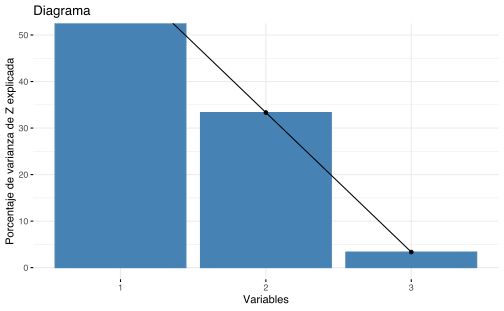
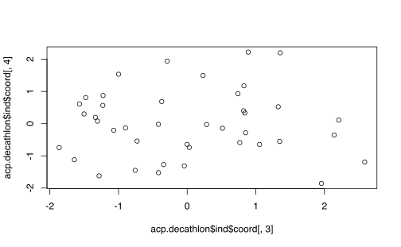
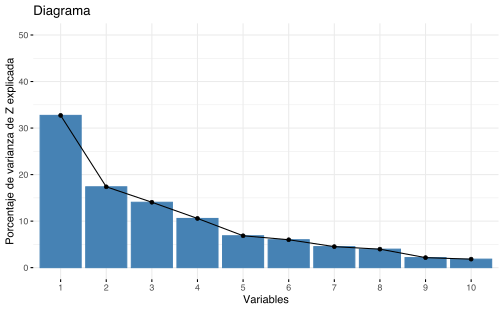

Capítulo 8 Análisis en componentes principales
Si se quiere seleccionar la mejor proyección de 2 variables de una nube de puntos \(X_1,\dots, X_p\), se debe hacer \(\binom{p}{2}\) gráficos de dispersión. Se debe seleccionar la que tenga menor varianza, es decir, en los siguientes gráficos, la mejor foto sería la que tenga la mayor variabilidad:

El ACP lo que busca es un número reducido de dimensión que represente el máximo de variabilidad en las observaciones.
8.1 Primer componente principal
## Error in knitr::include_graphics("pca1.png"): Cannot find the file(s): "pca1.png"\[ Z_1 := \phi_{11}x_1 + \phi_{21}x_2 + \dots + \phi_{p1}x_p;\quad \text{con } \sum_{j=1}^{p}\phi_{j1} = 1\] tal que \(Z_1\) tenga la varianza máxima.
Al vector \(\phi_1 = (\phi_{11}, \phi_{21},\dots,\phi_{p1})\) se le llama pasos o cargas.
\(X = (X_1,\dots,X_p)_{n\times p}\) es la matriz de diseño donde cada columna tiene media 0. Se resuelve el problema \[\underset{\phi_1}{\max} \left\lbrace\dfrac{1}{n}\sum_{i=1}^{n}\left(\sum_{i=1}^p \phi_{j1} X_{ij} \right)^2 \right\rbrace \text{ sujeto a } \sum_{j=1}^p \phi_{j1}^2 = 1 \] Los \(Z_{11},\dots, Z_{n1}\) son los scores del primer componente principal.
Representación gráfica
## Error in knitr::include_graphics("representacion.jpg"): Cannot find the file(s): "representacion.jpg"\(\phi_1\) es la dirección en el espacio característico en \(\mathbb{R}^p\) en donde los datos tengan la máxima varianza.
8.2 Segunda componente principal
## Error in knitr::include_graphics("pca2.png"): Cannot find the file(s): "pca2.png"\[ Z_{2}:= \phi_{12}x_1 + \phi_{22}x_2+\dots+\phi_{p2}x_p\] \[\underset{\phi_1}{\max} \left\lbrace\dfrac{1}{n}\sum_{i=1}^{n}\left(\sum_{i=1}^p \phi_{j2} X_{ij} \right)^2 \right\rbrace \text{ sujeto a } \sum_{j=1}^p \phi_{j1}^2 = 1\] Se tiene, además, que \(\forall i\), \(Z_{i2}\perp Z_1\), entonces \[ Z_{i2}\perp Z_1 \implies \phi_{2} \perp \phi_{1}\] De la misma forma se construye \(\phi_3,\phi_4,\dots, \phi_p\).
Notas:8.3 ¿Cuántos componentes usar?

8.4 Laboratorio
Vamos a usar los datos USArrests que represente estadísticas de arrestos por motivos de asaltos, asesinatos, violaciones, etc; en 50 estados de EEUU en 1973.
El objetivo es encontrar si hay patrones entre ciudad y tipos de crimen.
Exploración de datos Ejecute una exploración de datos

## Murder Assault UrbanPop Rape
## Min. : 0.800 Min. : 45.0 Min. :32.00 Min. : 7.30
## 1st Qu.: 4.075 1st Qu.:109.0 1st Qu.:54.50 1st Qu.:15.07
## Median : 7.250 Median :159.0 Median :66.00 Median :20.10
## Mean : 7.788 Mean :170.8 Mean :65.54 Mean :21.23
## 3rd Qu.:11.250 3rd Qu.:249.0 3rd Qu.:77.75 3rd Qu.:26.18
## Max. :17.400 Max. :337.0 Max. :91.00 Max. :46.00Use la función prcomp y ejecute un análisis en componentes principales.
Luego use la función biplot para visualizar los resultados. Nota: Es posible que los ejes estén invertidos!
Finalmente construya un gráfico que represente la varianza explicada por cada componente principal para identificar cuántos componentes principales se deberían usar.
## Importance of components:
## PC1 PC2 PC3 PC4
## Standard deviation 1.5749 0.9949 0.59713 0.41645
## Proportion of Variance 0.6201 0.2474 0.08914 0.04336
## Cumulative Proportion 0.6201 0.8675 0.95664 1.00000## Murder Assault UrbanPop Rape
## 7.788 170.760 65.540 21.232## Murder Assault UrbanPop Rape
## 4.355510 83.337661 14.474763 9.366385## PC1 PC2 PC3 PC4
## Murder -0.5358995 0.4181809 -0.3412327 0.64922780
## Assault -0.5831836 0.1879856 -0.2681484 -0.74340748
## UrbanPop -0.2781909 -0.8728062 -0.3780158 0.13387773
## Rape -0.5434321 -0.1673186 0.8177779 0.08902432

## [1] 2.4802416 0.9897652 0.3565632 0.1734301## [1] 0.62006039 0.24744129 0.08914080 0.04335752plot(pve, xlab = "Principal Component", ylab = "Proportion of Variance Explained",
ylim = c(0, 1), type = "b")
plot(cumsum(pve), xlab = "Principal Component", ylab = "Cumulative Proportion of Variance Explained",
ylim = c(0, 1), type = "b")
## [1] 1 3 11 88.5 Ejercicios
- Del libro (James et al. 2013)
- Capítulo 10: 6, 8 `
Albert, Jim, Robert Gentleman, Giovanni Parmigiani, and Kurt Hornik. 2009. Bayesian Computation with R. Bayesian Computation with R. New York, NY: Springer New York. https://doi.org/10.1007/978-0-387-92298-0.
Cavanaugh, Joseph E., and Andrew A. Neath. 2019. “The Akaike Information Criterion: Background, Derivation, Properties, Application, Interpretation, and Refinements.” WIREs Computational Statistics 11 (3): e1460. https://doi.org/10.1002/wics.1460.
Hall, Peter. 1987. “On Kullback-Leibler Loss and Density Estimation.” The Annals of Statistics 15 (4): 1491–1519. https://doi.org/10.1214/aos/1176350606.
Härdle, Wolfgang, Axel Werwatz, Marlene Müller, and Stefan Sperlich. 2004. Nonparametric and Semiparametric Models. Berlin, Heidelberg: Springer Berlin Heidelberg. https://doi.org/10.1007/978-3-642-17146-8.
Hoffman, Matthew D., and Andrew Gelman. 2014. “The No-U-Turn Sampler: Adaptively Setting Path Lengths in Hamiltonian Monte Carlo.” Journal of Machine Learning Research 15 (47): 1593–1623. http://arxiv.org/abs/1111.4246.
James, Gareth, Daniela Witten, Trevor Hastie, and Robert Tibshirani. 2013. An Introduction to Statistical Learning. Vol. 103. New York, NY: Springer New York. https://doi.org/10.1007/978-1-4614-7138-7.
Kruschke, John K. 2014. “Doing Bayesian Data Analysis: A Tutorial with R, JAGS, and Stan, Second Edition.” In Doing Bayesian Data Analysis: A Tutorial with R, JAGS, and Stan, Second Edition, 1–759.
Stone, M. 1977. “An Asymptotic Equivalence of Choice of Model by Cross-Validation and Akaike’s Criterion.” Journal of the Royal Statistical Society. Series B (Methodological) 39 (1): 44–47.
Wasserman, Larry. 2006. All of Nonparametric Statistics. All of Nonparametric Statistics. New York, NY: Springer New York. https://doi.org/10.1007/0-387-30623-4.
References
James, Gareth, Daniela Witten, Trevor Hastie, and Robert Tibshirani. 2013. An Introduction to Statistical Learning. Vol. 103. New York, NY: Springer New York. https://doi.org/10.1007/978-1-4614-7138-7.